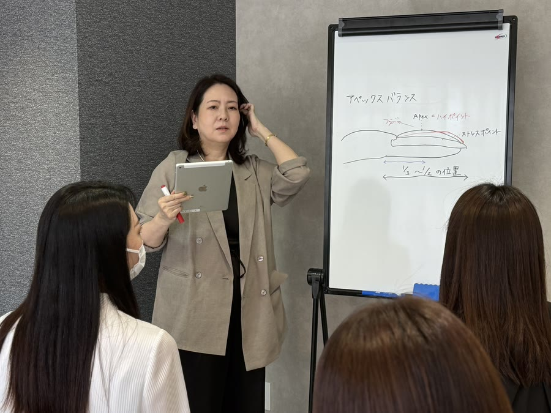

あと10年、
同じ生活を続けますか？
-
資格はある。
けれど、 技術に自信が持てない -
SNSで同世代の活躍を見るたび、
胸がざわつく -
自分の挑戦は、
いつも後回しにしてきた -
飛び抜けたアートの
センスが あるわけではない -
学び直したい。
でも、 家庭も仕事も 止められない -
本当は、
自分はもっと できるはずだと 思っている
Quiet Luxuryが選ばれる、
3つの理由


本質の技術を、
たった二ヶ月で
Quiet Luxuryで
得られる技術


※ 上の数値はすべて仮置きです。実績が確定してから差し替えてください。
要差し替え 体験談本文が入ります。実際に受講された方の言葉を、許諾を得たうえで掲載してください。
要差し替え お名前・年代・地域
要差し替え 体験談本文が入ります。実際に受講された方の言葉を、許諾を得たうえで掲載してください。
要差し替え お名前・年代・地域
要差し替え 体験談本文が入ります。実際に受講された方の言葉を、許諾を得たうえで掲載してください。
要差し替え お名前・年代・地域
このスクールを、
主宰する人

受講料
よくあるご質問
大丈夫です。受講される方の多くが、資格を取ってから何年も離れていた方です。1週目に今の技術を見せていただき、そこを起点に組み立てます。思い出すところからで構いません。
対面は全8回のうち4回だけです。残りはZoomなので、ご自宅から参加できます。日程は個別に調整し、急な体調不良のときは振り替えられます。
スマートフォンだけで参加できます。初回の前に接続の練習をご用意していますので、設定や操作に不安があってもそこで解消できます。
あります。開いてからのほうが、迷いは増えるものです。写真添削とご質問は卒業後も受け付けています。期間の詳細は 要確認 です。
このスクールが扱うのは、流行のアートではありません。爪を見立てる力、持ちのよい仕上げ、そして提案の言葉です。センスではなく、積み上げで届く領域です。
いいえ。相談は、合うかどうかを確かめる場です。合わないと感じられたら、そのままお伝えください。こちらから追いかけるご連絡はいたしません。